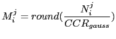
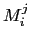
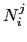
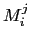
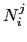

Next: Automatic Selection of the Up: Clusters and Models Complexity Previous: Clusters and Models Complexity Contents
The acoustic models used to represent each cluster are a key part of the agglomerative clustering process. On one hand, comparing their likelihood given the data is how it is decided whether two models belong to the same cluster or not. On the other hand, they are used in the decoding process to redistribute the acoustic data into the different clusters on every iteration.
When designing their size, an important decision is whether to use fixed models (meaning a fixed number of Gaussian mixtures from start to finish), or if it allows the number of Gaussian mixtures to vary according to time or occupancy. Using fixed models is a viable alternative, but runs into the problem of having sufficient training data when the number of Gaussian mixtures is set to be high, or being too general a model when it is set to be small.
Furthermore, when comparing two models via  BIC, if they
are too general they tend to over-merge, and when they are too
specific to the data they under-merge. Therefore it is important
to find a tradeoff on the number of mixtures used (model
complexity). This has been addressed in the systems presented by
ICSI to the RT evaluations for meetings and broadcast news
(Anguera, Wooters, Peskin and Aguilo (2005) and Wooters et al. (2004)) by using
variable complexities as the merging process progresses. In such
systems, all cluster models (regardless of their size) are
initially trained using a fixed number of Gaussian mixtures. Upon
merging any two clusters, the data from both original clusters are
merged and a new cluster model is created as the sum of both
parents' Gaussian mixtures.
BIC, if they
are too general they tend to over-merge, and when they are too
specific to the data they under-merge. Therefore it is important
to find a tradeoff on the number of mixtures used (model
complexity). This has been addressed in the systems presented by
ICSI to the RT evaluations for meetings and broadcast news
(Anguera, Wooters, Peskin and Aguilo (2005) and Wooters et al. (2004)) by using
variable complexities as the merging process progresses. In such
systems, all cluster models (regardless of their size) are
initially trained using a fixed number of Gaussian mixtures. Upon
merging any two clusters, the data from both original clusters are
merged and a new cluster model is created as the sum of both
parents' Gaussian mixtures.
Such an approach has a drawback that is addressed with the
proposed technique. Models with the same complexity are modeling
different amounts of data (sometimes very different), therefore
their focus is very different. When doing a  BIC comparison
of such models one cannot expect to obtain coherent results,
therefore system performance can degrade.
BIC comparison
of such models one cannot expect to obtain coherent results,
therefore system performance can degrade.
An algorithm is presented that selects the number of mixtures to be used when modeling each cluster according to its occupancy count. This could be referred to as an occupancy driven approach. After each important change in the amount of data assigned to each cluster (normally due to a segmentation step), the number of acoustic frames that are assigned to each of the models is used to determine the number of mixtures by:
|  | (4.9) |
The number of Gaussian mixtures to model cluster  at iteration
at iteration
 () is determined by rounding the number of frames
belonging to that cluster at that time () divided by a
constant value (
() is determined by rounding the number of frames
belonging to that cluster at that time () divided by a
constant value (
 ) that is defined as Cluster
Complexity Ratio, fixed across all meetings.
) that is defined as Cluster
Complexity Ratio, fixed across all meetings.
In both approaches, the previous and this new one, the total number of mixtures used over all models remains constant in average, being distributed between the different cluster models as described above. This allows tracking of the system evolution by inspection of the Viterbi decoding total likelihood, which can be compared across merging iterations.
The model complexity selection algorithm is executed in the places described in Figure 3.6. The desired complexity of each model is computed using the equation described above and when it is different than the current complexity of the model it is readjusted in one of two possible ways:
user 2008-12-08